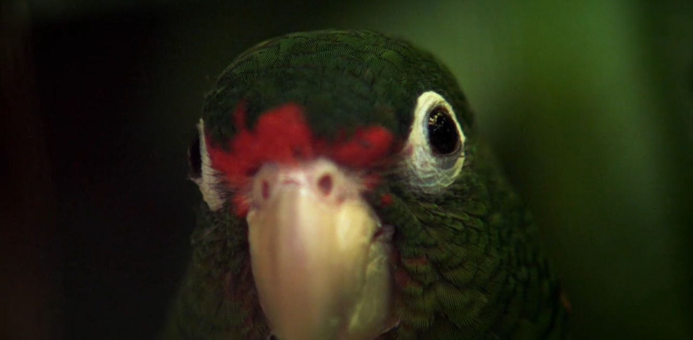
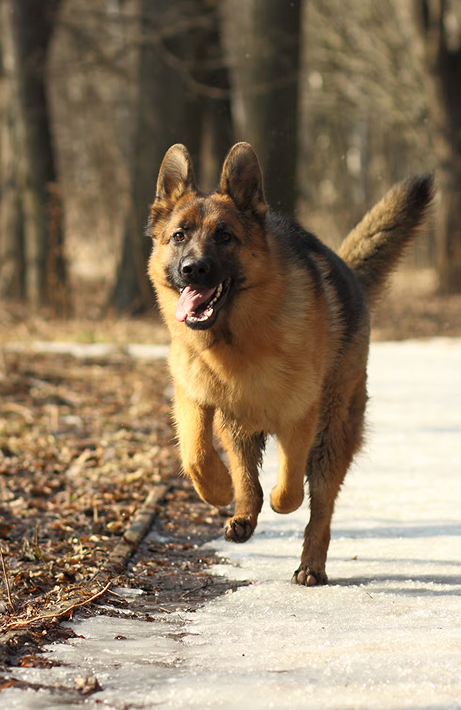
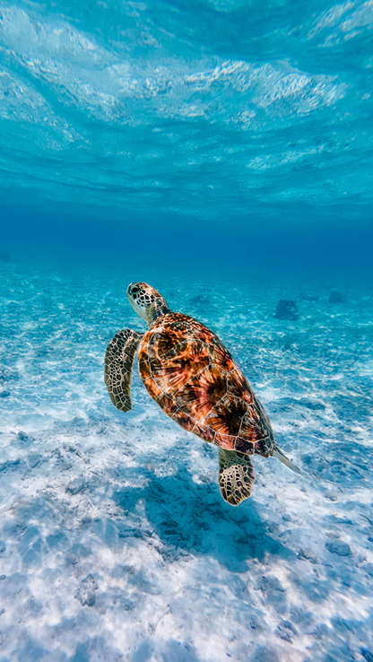
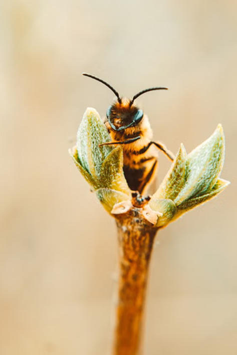

Oltre l'intuito
Basato sull'articolo di Marco Inguscio

Noiosi ai cani
Le nostre camminate sono un incedere meccanico, devitalizzato, privo di alcuno scopo. Nel mondo dei cani non si attraversano i luoghi, si esplorano, il loro andamento è erratico, non è l’esercizio di una traiettoria.
È il loro naso a dettare il passo, a costruire olfattivamente il passato, il presente e possibilmente anche il futuro di un oggetto, di un luogo, di un incontro. È proprio l’olfatto a definire la loro stessa esistenza rispetto ad un mondo preminentemente visuale, come ad esempio il nostro,
Yong chiede che al cane sia concesso di essere cane, di fare il cane, di vivere cioè alle sue condizioni, non alle nostre, di vivere cioè alle sue condizioni, non alle nostre. Gli animali non sono semplici modelli di studio, attraverso i quali comprendere di riflesso la nostra natura umana o perfezionare le nostre tecnologie. Gli animali “hanno valore in sé”, si tratta di scoprire un altro ordine delle cose, che esiste e prolifera anche se non è destinato a noi.

Incerti passi su pianeti alieni.
Le nostre camminate sono un incedere meccanico, devitalizzato, privo di alcuno scopo. Nel mondo dei cani non si attraversano i luoghi, si esplorano, il loro andamento è erratico, non è l’esercizio di una traiettoria.
Quando leggiamo delle peregrinazioni delle tartarughe caretta o delle falene bogong leggiamo anche di molte ipotesi brillanti ma di nessuna prova definitiva. Nessuno sa come funzioni la magnetoricezione e perché lo faccia così bene.
I campi magnetici attraversano senza impedimenti la materia biologica, per cui le cellule che li rilevano o un eventuale organo preposto alla sua percezione – ciò che chiamiamo magnetorecettori – potrebbero essere ovunque, non solo perché specie diverse potrebbero aver sviluppato soluzioni fisiologiche diverse, ma perché potrebbero essere indistinguibili dai tessuti organici che li circondano.

I segnali devono essere visti
Le nostre camminate sono un incedere meccanico, devitalizzato, privo di alcuno scopo. Nel mondo dei cani non si attraversano i luoghi, si esplorano, il loro andamento è erratico, non è l’esercizio di una traiettoria.
Nel 1992, Lars Chittka e Randolf Menzel analizzarono 180 fiori e scoprirono la tipologia di occhio più adatta a distinguerne i colori. La risposta è un occhio con tricromatismo verde, blu e UV: esattamente quel che hanno le api e molti altri insetti.
Intuitivamente si potrebbe pensare che questi impollinatori abbiano evoluto occhi in grado di vedere bene questi fiori, invece non è andata così. Il loro tricromatismo si è evoluto centinaia di milioni di anni prima della comparsa dei primi fiori, quindi devono essere stati questi ultimi a evolversi per adattarsi agli insetti.
